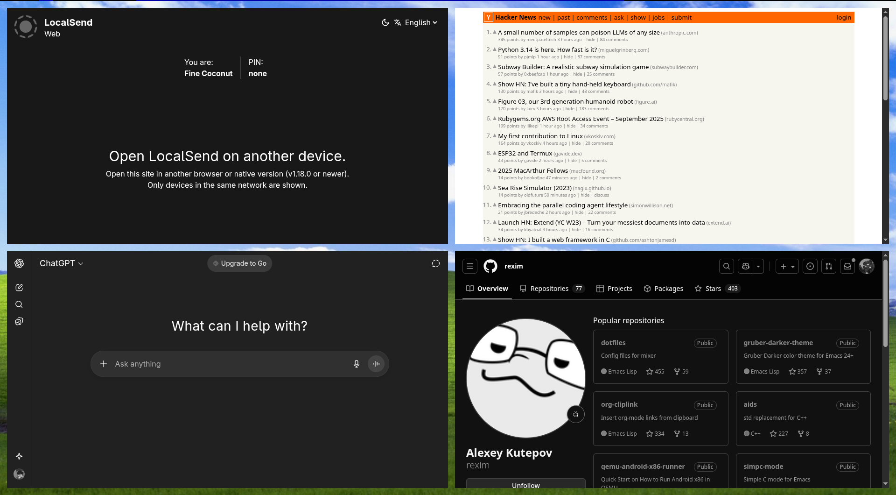

How to create Omarchy like standalone desktop web-applications

You might have seen web-apps (like shown in the image above) that run on the browser, but looks like standalone desktop applications. I have recently discovered it, and wanted to do the same on my system. But I don't use Omarchy, I use Arch with DWM, and other suckless tools like dmenu, slstatus etc.
So, how do I get this feature on my system? Well, I used ChatGPT to help me with that, as I'm still learning to get around with Linux. And I found out it was surprisingly easy to achieve this feature. Now I will explain how I did it on my system: arch + dmenu + dwm + brave;in 4 steps.
Step-by-step:
-
Create folders:
mkdir -p ~/.local/share/webapps/apps ~/.local/bin -
Create or put the script in:
nvim ~/.local/bin/script-name -
Make it executable using:
chmod +x ~/.local/bin/script-name - Keybind with your WM. By default the script menu runs on dmenu.
Troubleshooting: It worked for me on my system, but might not work for others. Make sure you include bin and apps directory to $PATH so that dmenu can see the applications.
If you are using dmenu, it opens the menu to with options to add or delete apps, and lists the created applications. You can create applications simply by typing name, url and the mode you want the session to be in(private/normal).